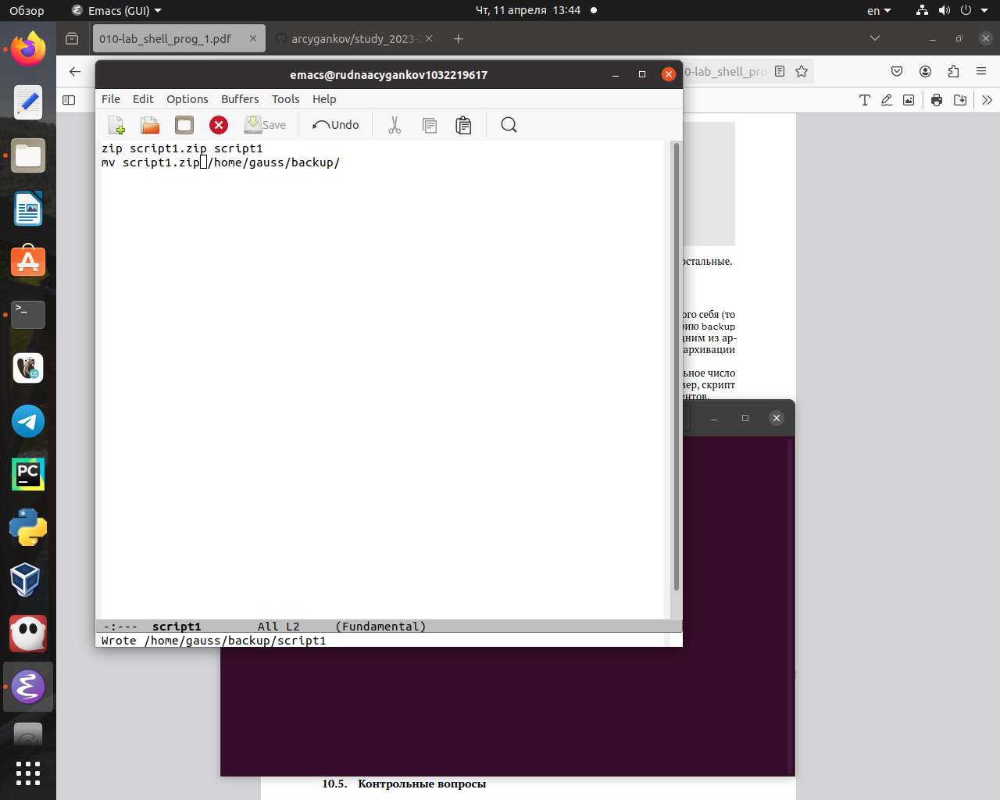
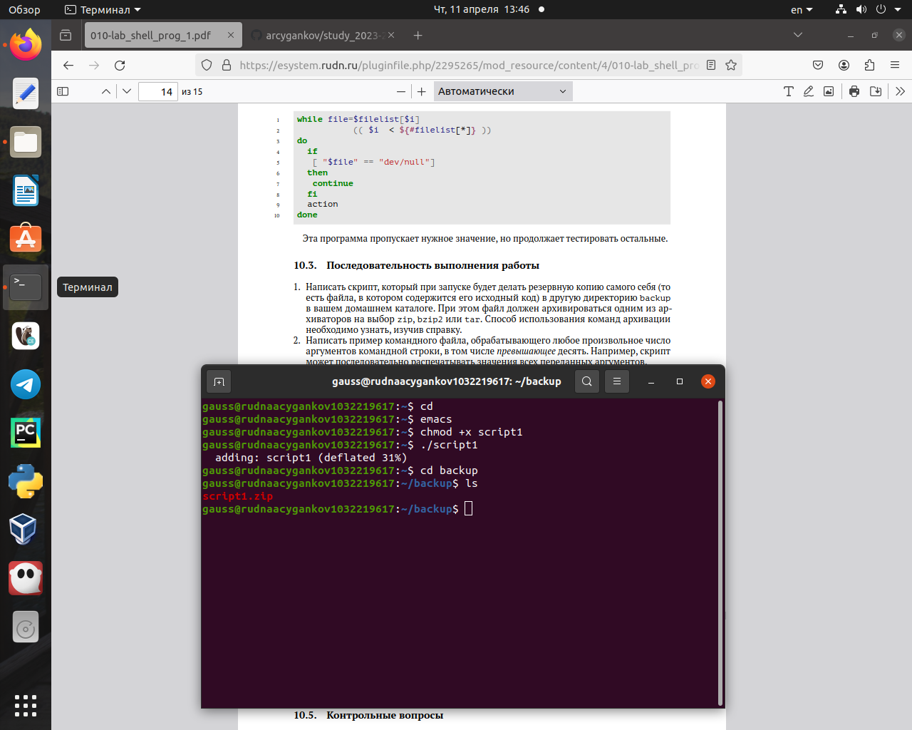
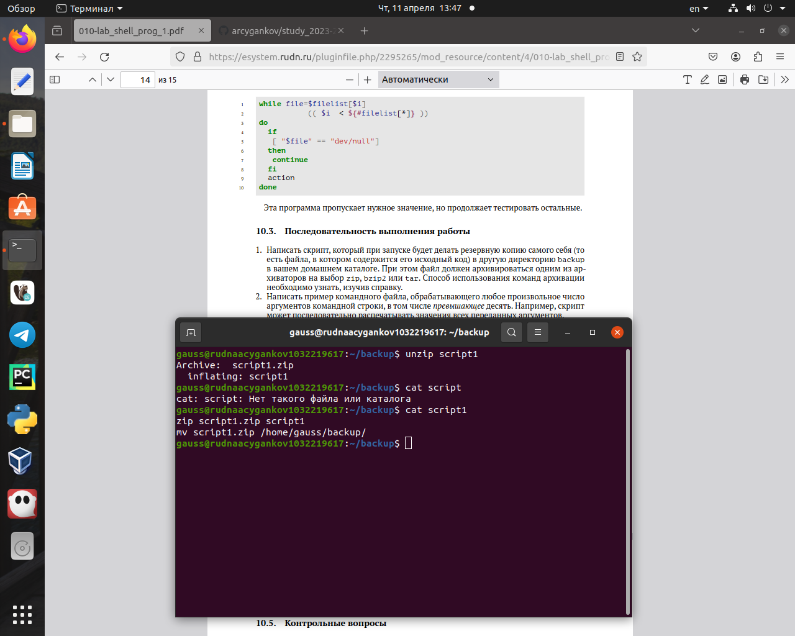
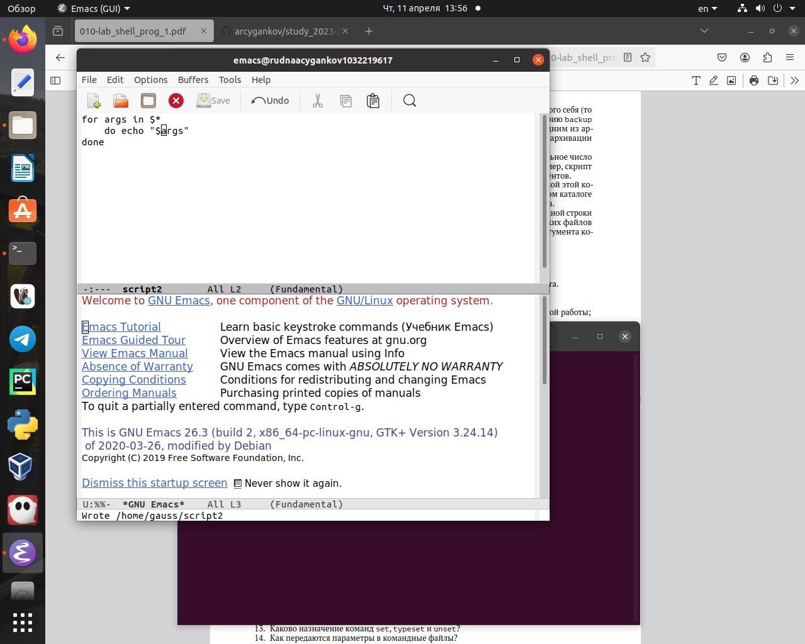
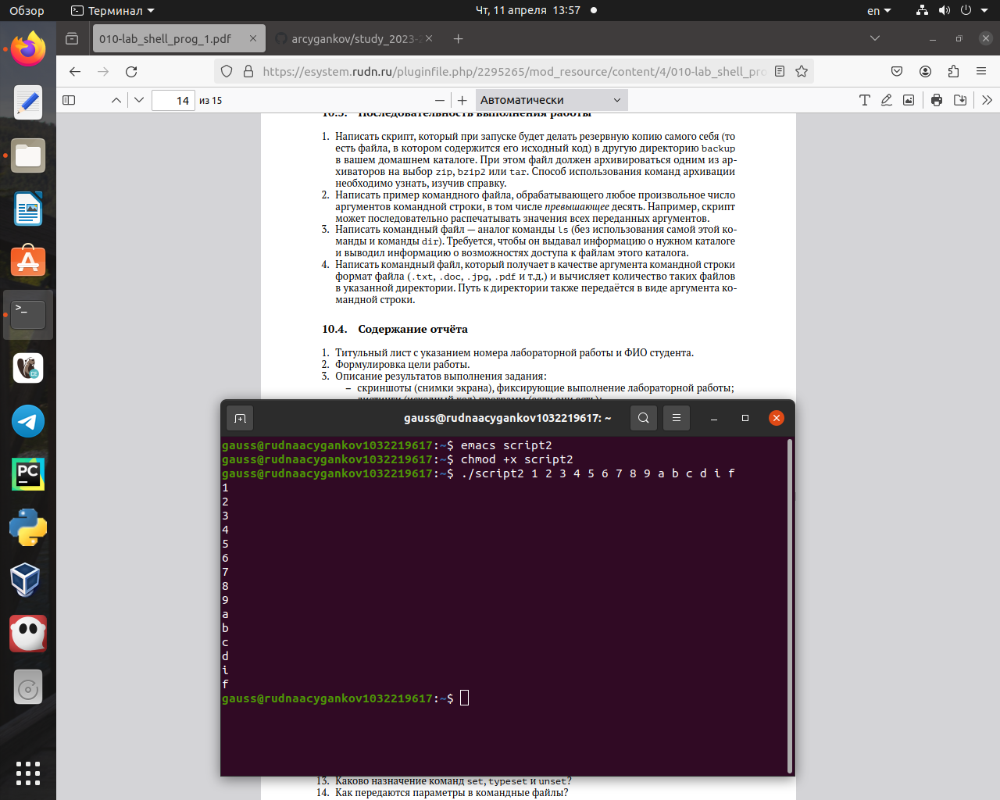
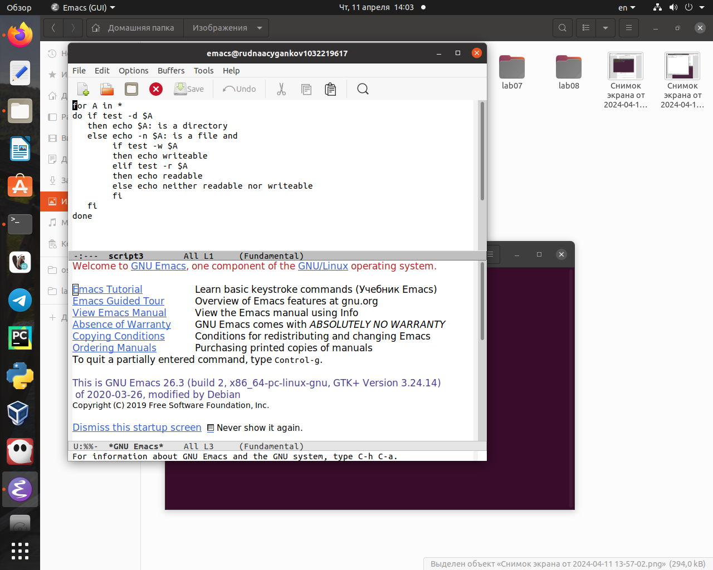
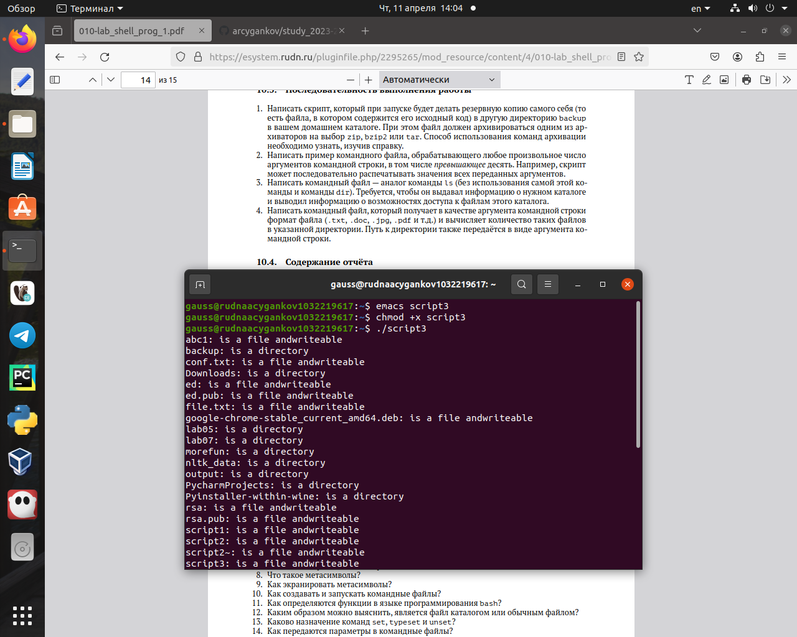
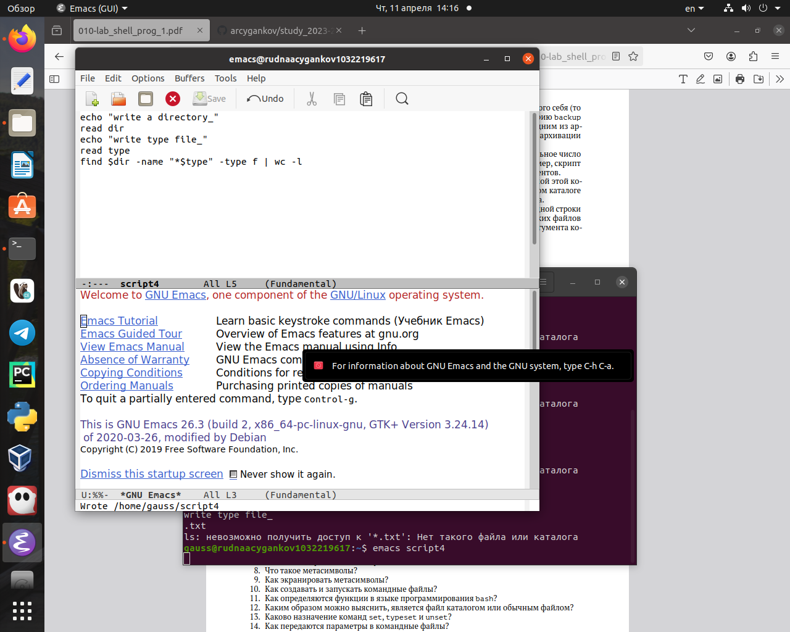
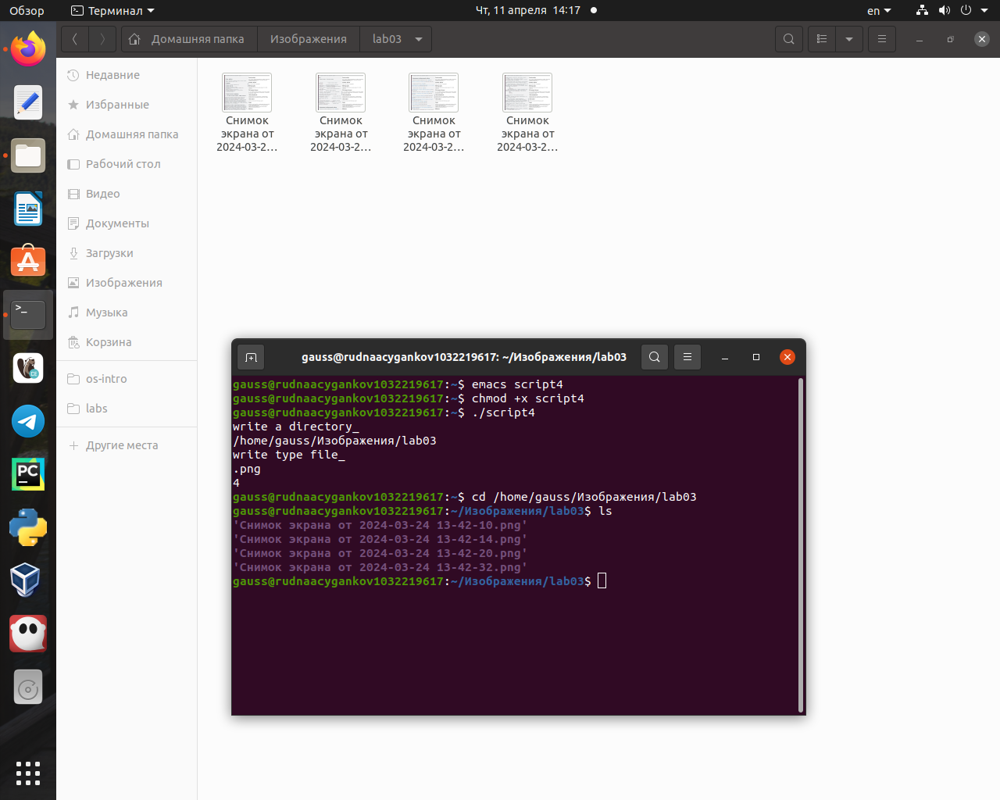

Умение создавать скрипты существенно ускорит у упростит выполнение рутинных задач в терминале.
Объект и предмет исследования
Командный процессор ОС UNIX
Цели и задачи
Изучить основы программирования в оболочке ОС UNIX/Linux. Научиться писать небольшие командные файлы.
Выполнение заданий.
Написать скрипт, который при запуске будет делать резервную копию самого себя (то есть файла, в котором содержится его исходный код) в другую директорию backup в вашем домашнем каталоге. При этом файл должен архивироваться одним из архиваторов на выбор zip, bzip2 или tar. Способ использования команд архивации необходимо узнать, изучив справку (см. рис. @fig:001, @fig:002, @fig:003).
script1
Результат
Результат
Написать пример командного файла, обрабатывающего любое произвольное число аргументов командной строки, в том числе превышающее десять. Например, скрипт может последовательно распечатывать значения всех переданных аргументов (см. рис. @fig:004, @fig:005).
script2
Результат
Написать командный файл - аналог команды ls (без использования самой этой команды и команды dir). Требуется, чтобы он выдавал информацию о нужном каталоге и выводил информацию о возможностях доступа к файлам этого каталога (см. рис. @fig:006, @fig:007).
script3
Результат
Написать командный файл, который получает в качестве аргумента командной строки формат файла (.txt, .doc, .jpg, .pdf и т.д.) и вычисляет количество таких файлов в указанной директории. Путь к директории также передаётся в виде аргумента командной строки (см. рис. @fig:008, @fig:009).
script4
Результат
Результаты
Вывод:
В ходе выполнения лабораторной работы я изучил основы программирования в оболочке ОС UNIX/Linux. Научился писать небольшие командные файлы.